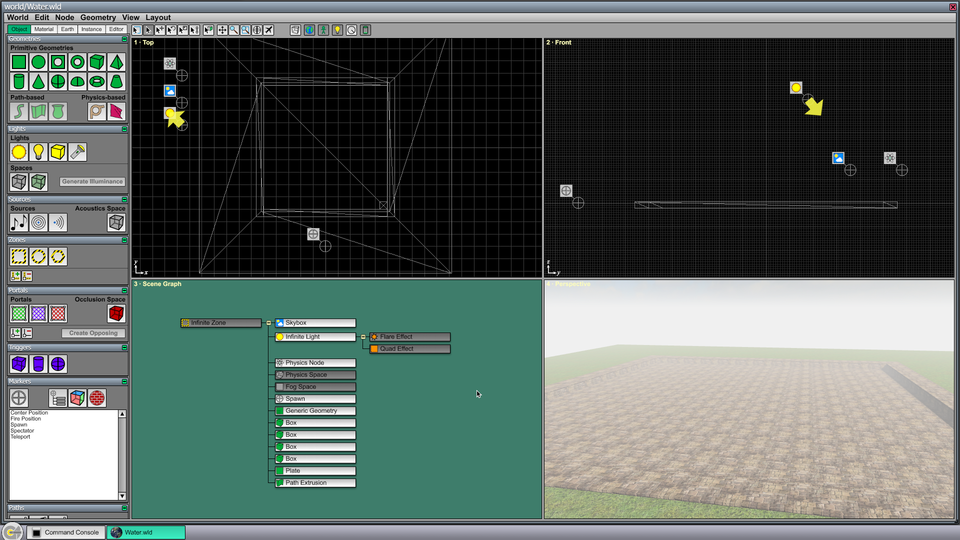
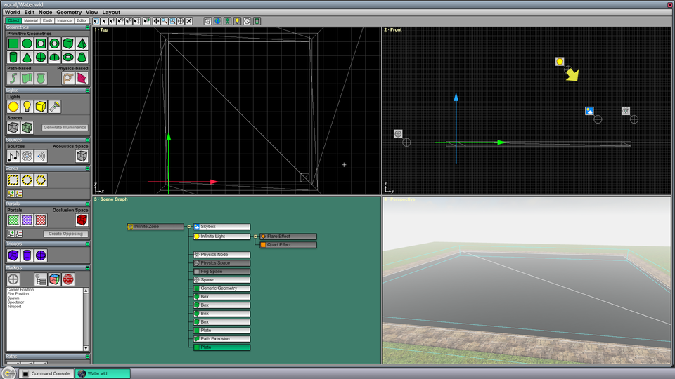
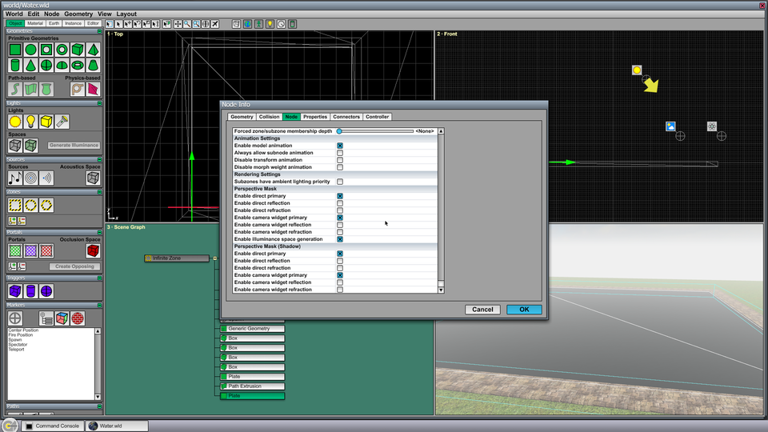
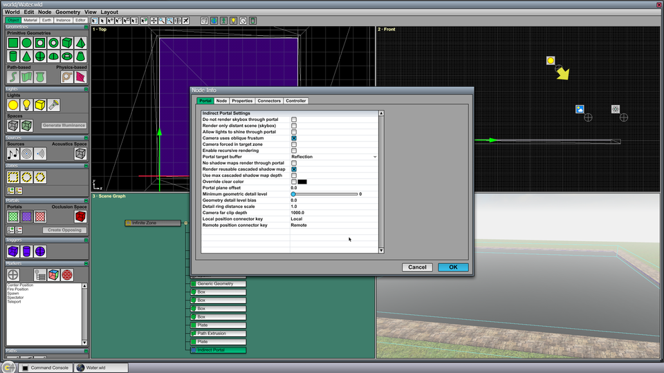
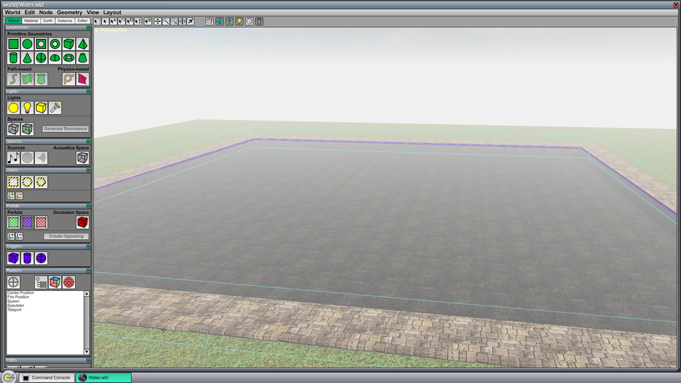
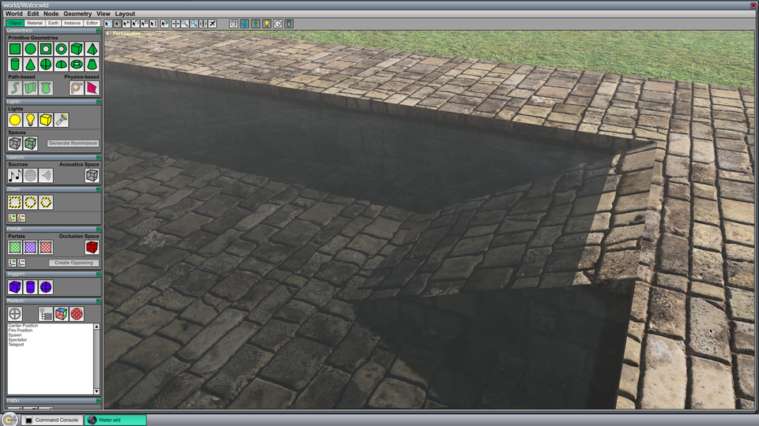
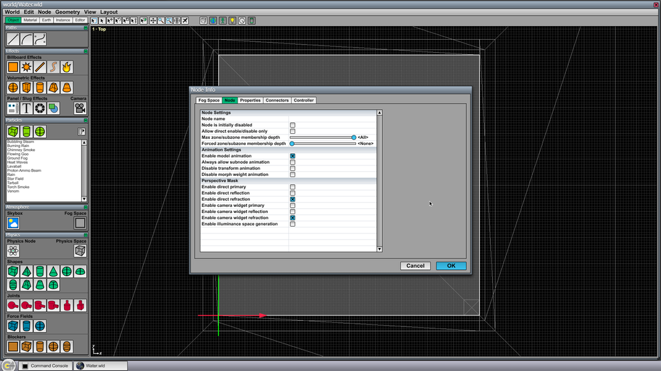
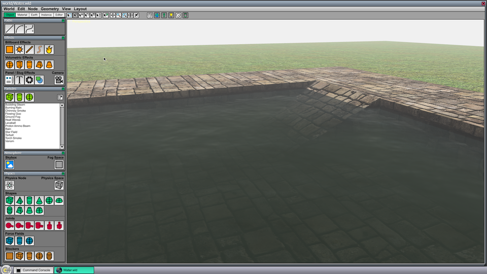

Water Tutorial
This tutorial guides you through the creation of a new water surface with reflection and refraction effects applied.
To follow this tutorial, you need the Data/Tutorial/world/Water.wld file that is included in the C4 Engine distribution.
To enlarge any of the screenshots below, click on the thumbnail icon below the image.
Step A: Open Water.wld
Open Data/Tutorial/world/Water.wld in the World Editor by typing Ctrl-O or by entering world world/Water into the Command Console. The World Editor should contain a scene that looks like the screenshot shown in Figure 1. The world already contains a ground plane and the boundary walls for a pool of water.
{kind=link}

Step B: Draw the water surface
Make sure that the Water material is selected in the Material page under the Material tab. Then switch back to the Object tab and select the Plate Geometry tool in the Geometries Page. Type Ctrl-1 to make the Top viewport fill the editor window. You may want to zoom in a little bit with the mouse wheel to make the fine gridlines appear. Draw a new plate geometry by clicking in one corner of the pool a dragging to the opposite corner. Type Ctrl-1 again to show all four viewports, and the world should appear as shown in Figure 2.
{kind=link}

Step C: Set water surface perspective mask
With the plate geometry representing the water surface still selected, type Ctrl-I to open the Node Info window. Switch to the Node tab and scroll down to the bottom so that all of the perspective mask settings are visible. We don't want the water itself to be rendered in the reflection or refraction image, so we need to uncheck all of the perspectives that include "reflection" or "refraction", as shown in Figure 3. After this is done, click OK.
{kind=link}

Step D: Draw a reflection portal
Select the Indirect Portal tool in the Portals Page. In the Top viewport, drag out the same square that you previously drew for the water surface, so that the portal covers the same area. With the portal still selected, type Ctrl-I to open the Node Info window. Under the Portal tab, check the Camera uses oblique frustum box, as shown in Figure 4. Under the Node tab, uncheck the perspectives for refraction so that the reflection portal is not considered when the refraction image is rendered. Click OK.
{kind=link}

Step E: Draw a refraction portal
Using the Indirect Portal tool again, draw another portal over the same area, and then type Ctrl-I to open the Node Info window. Under the Portal tab, check the Camera uses oblique frustum box and change the Portal target buffer to Refraction. Under the Node tab, uncheck the perspectives for reflection so that the refraction portal is not considered when the reflection image is rendered. Click OK, and type Ctrl-4 to switch to the perspective viewport. It should look like Figure 5, where the bottom of the pool can be seen through the water surface now.
{kind=link}

Step F: Set portal offsets
Hide both of the indirect portals so that the purple color no longer appears in the perspective viewport. (Select both indirect portals in the scene graph viewport and type Ctrl-H.) Switch to the perspective viewport by typing Ctrl-4 and take a moment to fly the camera around by holding in the right mouse button and using the WSAD keys. Notice that some white background color leakage is visible where the water surface meets the edges of the pool. This is due to the geometry being clipped at the water plane. To correct this problem, select both portals, type Ctrl-I, and change the Portal plane offset setting to 0.1. Click OK, and hide both portals again. The water surface should now appear as shown in Figure 6.
{kind=link}

Step G: Add an underwater fog space
The water is extremely clear at this point. To make it murky, we can add a fog space that will only affect the refraction image. There is already one fog space applied to the main scene. Multiple fog spaces can be used simultaneously as long as they apply to different perspectives. The existing fog space has already been configured to not be rendered in the refraction image.
Select the Fog Space tool in the Atmosphere Page under the Object tab. In the Top viewport, drag out the same area again, covering the water surface. Type Ctrl-I to open the Node Info window. Under the Node tab, uncheck all of the perspectives except the refraction perspectives, as shown in Figure 7.
Now switch to the Fog Space tab, and make the following changes to the fog settings. Set the Fog color to (75,90,55) for a greenish-brown color (or choose your own water color). Set the Fog density to 1.0, and set the Density function to Linear. Click OK. After hiding the underwater fog space, the pool should look like what's shown in Figure 8.
{kind=link}

{kind=link}

Additional Notes
This tutorial was set up so that the water surface, indirect portals, and fog space were all drawn in the x-y plane where z = 0. These nodes will often need to be moved vertically to the desired height. The important part is that they are all coplanar.
The overall intensity of the reflection and refraction images rendered on the water surface is controlled by the reflection color and refraction color settings in the Material Editor. For example, to see a must brighter reflection in the water, double-click on the Water material to open the Material Editor, switch to the Ambient tab, and make the Reflection color brighter.
This tutorial used a perfectly flat surface for the water. To create a surface with physically-simulated waves, a water block can be drawn instead, and buoyancy can be added by using a field node. These will be covered in a separate tutorial.